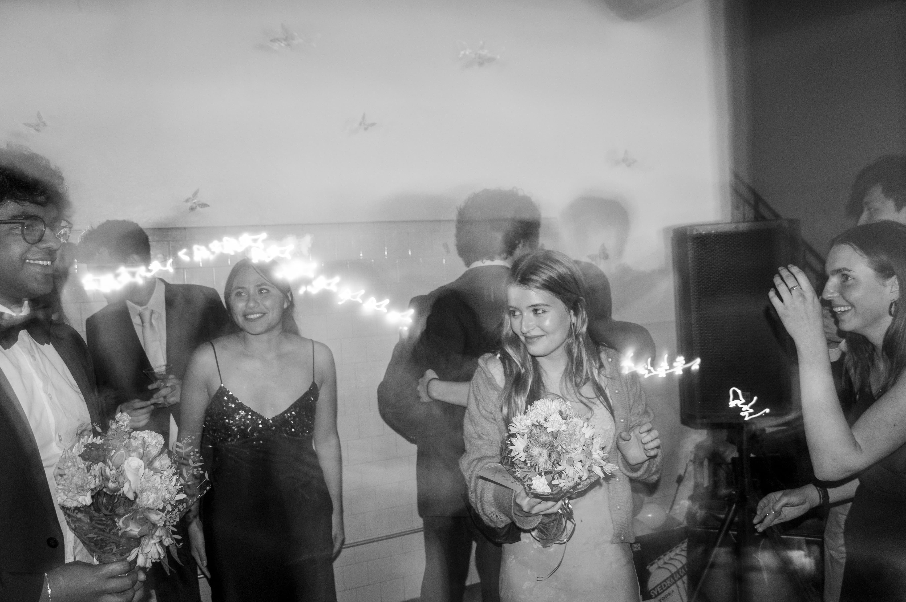

"Candids should capture a very specific mood while having an established and simple composition. KISS – Keep it simple stupid"

Art?
To me, I like to play with the idea of candids by embracing wonky shadows and effects – this of course leaves the photos looking bizzare or uncoventional, but isn't that where the true beauty lies?